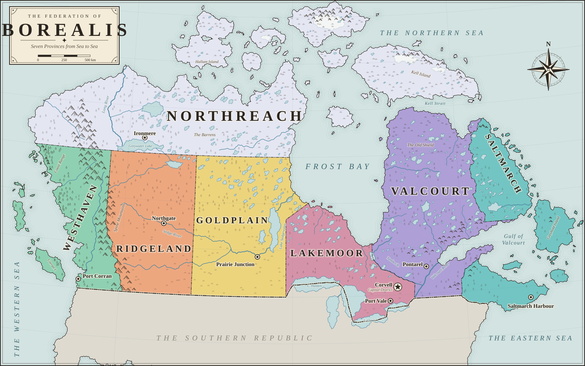

Borealis
This is where the economics-to-politics simulation stands. Your whiteboard plan is built as a working prototype. Try it, then tell me where it matches what you pictured and where it doesn't.

The demo runs everything in one window. Press "Start a new game", then "Start Year 1", and watch the phone update.
Your whiteboard, built
| On the whiteboard | In the prototype |
|---|---|
| 7 territories, groups of 4 | 7 provinces of a fictional country, Borealis. Each group has 4 rotating roles: Premier, Finance Minister, Trade Minister, Citizens' Advocate. |
| Approval rating | Each province has an approval score. It shows why it changed, based on 4 citizen groups: workers, families, businesses, seniors. |
| Energy, Food, Materials, Money | The same 4 resources. Every province is short on something, so shortages cost money or approval. |
| Income, Free trade, Local issue | Each fiscal year runs Headline, Income, Trade, Local issue, Budget, then Year-end results. |
| Each group plays the provincial government | Groups set taxes, spending on health, education, infrastructure and social programs, and their place from market to command economy. |
| 4 federal parties | Cornerstone, Forward, Common Good and Evergreen. They are fictional but echo real Canadian values. |
| Students "vote" themselves into a party | Students join a party caucus. Their home province stays their riding for the election. |
| Bills and issues | A federal budget bill goes through Cabinet, the House, the Senate and Royal Assent. Year 7 shows its effects on every province. |
The plan: 16 periods
| Period 1 | Launch: scarcity, meet your province |
| Periods 2 to 8 | Phase 1 Economic: 6 fiscal years, one new idea each year (economic systems, taxes, deficits, GDP and CPI), then a check |
| Period 9 | Bridge crisis: a problem no province can solve alone. Why a federal government? |
| Periods 10 to 15 | Phase 2 Political: parties, platforms, campaign, election, Parliament, budget bill, then a check |
| Period 16 | Budget Defence: students defend a decision using what they learned |
Built to the Grade 8 outcomes in the June 2026 draft Social Studies curriculum. It can be cut to 12 periods or stretched to 18.
Questions for you
- Does one fiscal year per period match how you pictured class time?
- Is 6 fiscal years right, or would fewer, deeper years work better?
- Four preset parties that students shape: is that your vision, or should students write more of their own?
- A few cards touch live Alberta debates (a pipeline, a language and culture card). Keep them, swap them, or preview them first?
- The curriculum names the real parties. Is a short mini-lesson in Period 10, outside the game, the right place for that?
- 16 periods or 18?
Where it stands
Works now
- The whole unit, start to finish, on one computer
- Board-only mode if devices fail
- Separate saved games for each class
- Printable history log for the final task
Not yet
- Student phones talking to the board across the room. This needs a live sync service and a privacy review.
- Testing on a real touch board and iPads
Design documents: curriculum plan and game systems. No student names are collected or stored.